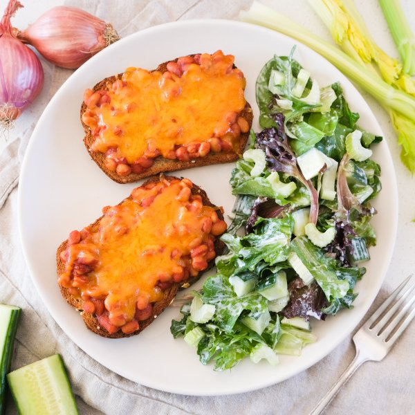

Cheesy "Baked Beans on Toast" with Mixed Greens & Celery Salad

Total Time
35 min
Nutrition (Per Serving)
585 kcalCalories
30.2 gProtein
75 gCarbs
19.9 gFat
Full nutrition table
| Calories | 585 kcal |
| Total fat | 19.9 g |
| Saturated fat | 7.3 g |
| Trans fat | 0.4 g |
| Cholesterol | 34.3 mg |
| Sodium | 858.9 mg |
| Carbohydrates | 75 g |
| Fiber | 15.6 g |
| Sugars | 19.6 g |
| Protein | 30.2 g |
| Potassium | 1260.6 mg |
| Calcium | 467.4 mg |
| Iron | 5.9 mg |
| Vitamin A | 1083 IU |
| Vitamin C | 16.4 mg |
| Vitamin D | 7.7 IU |
Cookware
Ingredients
- 2 (15 oz) canscannellini (white kidney) beans
- 4 stickscelery
- ½ (8 oz) blockcheddar cheese
- 1English cucumber
- ¼ cupplain Greek yogurt
- 1shallot
- 1 (5 oz) pkgspring mix (mixed greens)
- 2 (8 oz) canstomato sauce
- 8 sliceswhole grain bread
- apple cider vinegar
- black pepper
- cumin, ground
- Dijon mustard
- mayonnaise
- paprika
- pure maple syrup
- salt
- Worcestershire sauce
Steps
- Preheat oven to 450°F. Position racks in the upper and lower thirds of the oven.
- Drain and rinse beans in a colander, then transfer to a baking dish.2 (15 oz) cans cannellini (white kidney) beans
- Peel, halve, and mince shallot; add to the baking dish along with tomato sauce, maple syrup, Dijon, Worcestershire, and spices. Stir to combine.1 shallot
2 (8 oz) cans tomato sauce
4 tsp pure maple syrup
4 tsp Dijon mustard
2 tsp Worcestershire sauce
½ tsp salt
½ tsp black pepper
½ tsp paprika
⅛ tsp cumin, ground - Place baking dish on lower rack of the oven (it doesn't have to be fully heated) and bake, stirring halfway through, until beans are soft and sauce has thickened, about 15 minutes.
- Meanwhile, wash and dry the fresh produce.4 sticks celery
1 English cucumber
1 (5 oz) pkg spring mix (mixed greens) - Place yogurt, mayo, water, vinegar, salt, and pepper in a medium bowl; whisk to combine the dressing.¼ cup plain Greek yogurt
2 tbsp mayonnaise
4 tsp water
4 tsp apple cider vinegar
½ tsp salt
¼ tsp black pepper - Trim and slice celery crosswise into thin pieces; trim and medium dice cucumber. Add both to the bowl with the dressing and set aside.
- Coarsely grate cheddar.½ (8 oz) block cheddar cheese
- Arrange bread slices on a large baking sheet pan; place on upper rack of the oven and toast, flipping once, until golden, 4-5 minutes. Remove from oven.8 slices whole grain bread
- When the baked beans are done, remove from oven and stir well. Divide beans between toast slices and top each with an even layer of cheese.
- Return baking sheet to upper rack of the oven and bake until cheese is melted, 3-4 minutes. Remove from oven.
- Just before serving, add mixed greens to the bowl with the dressing and toss to combine the salad.
- Divide "baked beans on toast" between plates and serve with salad on the side. Enjoy!